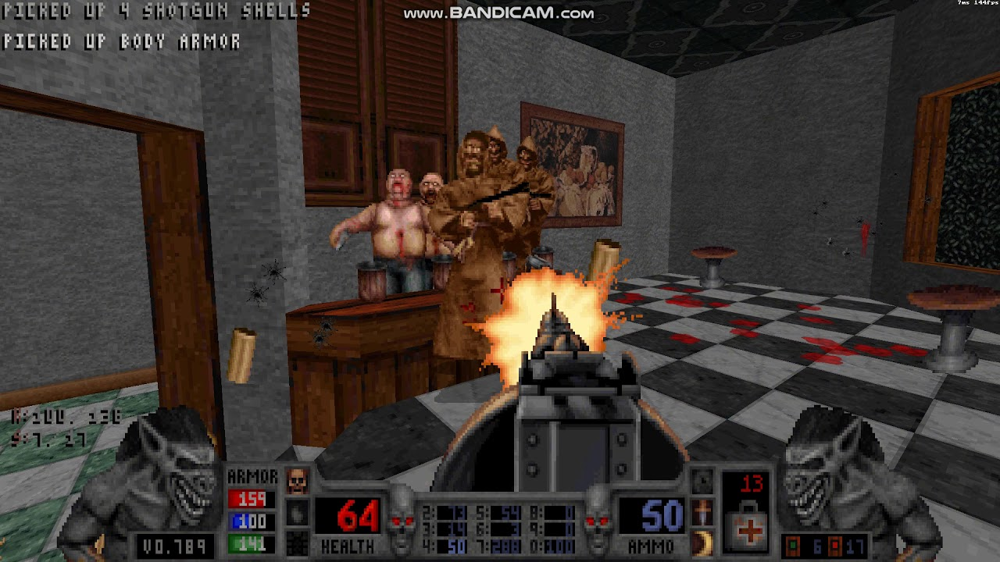

Following the release of Duke Nukem 3D, 3D Realms and Monolith began working on this title. This game uses the build engine as well. This allowed the game to create gothic looking enviroments. The gothic and violent themes are what made this game popular, but it also mad it incredibly controversal.
Unlike Duke Nukem 3D, blood utilized cut scenes a lot more. The cutscenes also looked more 3D than those in Duke Nukem. Take a look!